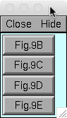
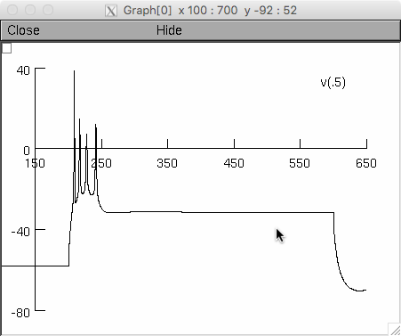
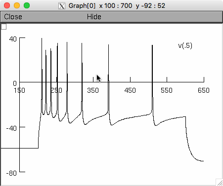
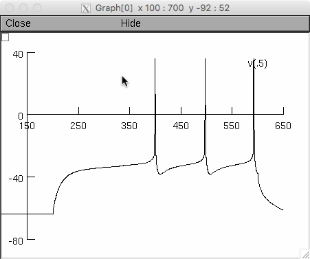
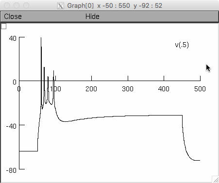
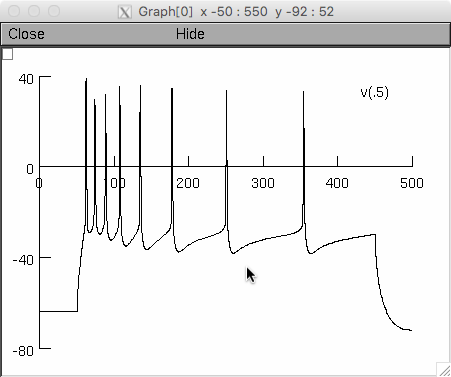
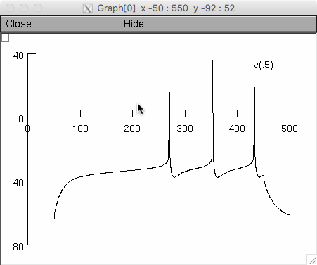

NEURON CODE from the paper: Alturki A, Feng F, Nair A, Guntu V, Nair SS (2016) Distinct current modules shape cellular dynamics in model neurons, Neuroscience 334: 309-331. In the paper, two versions (termed 'original' and 'segregated') of four different single cell models are compared to illustrate that the segregation procedure provides results similar to the original model. The four different single cell models used in Alturki et al. (2016) are from the following publications: 1. Peter Hemond, Daniel Epstein, Angela Boley, Michele Migliore, Giorgio A. Ascoli, and David B. Jaffe (2008) Distinct classes of pyramidal cells exhibit mutually exclusive firing patterns in hippocampal area CA3b. Hippocampus 18(4):411-424 2. Pospischil, M., Toledo-Rodriguez, M., Monier, C., Piwkowska, Z., Bal, T., Fregnac, Y., Markram, H. and Destexhe, A. (2008) Minimal Hodgkin-Huxley type models for different classes of cortical and thalamic neurons.Biological Cybernetics 99: 427-441. 3. Rubin D, Cleland TA (2006) Dynamical mechanisms of odor processing in olfactory bulb mitral cells. J Neurophysiology. 4. Alturki A, Nair A, Guntu V, Nair SS (2015) Single neuron models for network simulations. In: Proceedings of the First Indian control conference Chennai, India. The original single cell models from these papers are provided in a folder labeled 'Original' within each of the four sub-folders. Each of the four sub-folders also has another folder labeled 'Segregated' that has the model generated after the segregation procedure we propose in Alturki et al. 2016. The procedure to compile and run the codes is provided in separate readme files in each of the subfolders titled 'Segregated'. _______________________________________________________ NOTE THAT FOR EACH SUB-FOLDER, YOU HAVE TO FIRST COMPILE THE FILES Under unix systems: to compile the mod files use the command nrnivmodl and run the simulation hoc file with the command nrngui FILENAME.hoc Under Windows systems: to compile the mod files use the "mknrndll" command. A double click on the simulation file FILENAME.hoc will open the simulation window. Under MAC OS X: Drag and drop the FILE folder onto the mknrndll icon in the NEURON application folder. When the mod files are finished compiling, double click on the simulation file FILENAME.hoc The auto-launch demo offers to run "segregated" (see paper) versions of the Hemond et al 2008 models. Buttons 9B, 9C, 9E from Hemond et al 2008 fig 9 sub panel  results in the graphs for the Fig. 4 B left, middle, and right, respectively in Alturki et al. 2016:    By manually running the original simulation with the mosinit_orig.hoc in the "Original" subfolder (need to compile and use the mod files there as well), the first two and fourth buttons results are in Fig. 4 A in Alturki et al. 2016:    -- Questions on how to use this model should be directed to nairs@missouri.edu 20160126 Original/mosinit.hoc was renamed to Original/mosinit_orig.hoc in the 1_Hemond folder so that auto-launch would compile the mod files and demo the Segregated sub-folder instead of the Original subfolder.